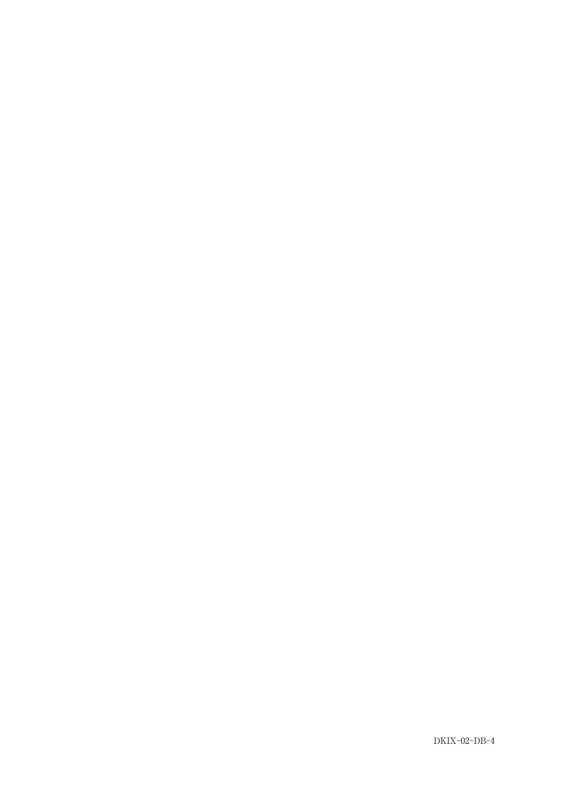

スケーリング
定義
スケーリング（Scaling）とは、歯冠と歯根の表面に付着したプラーク・歯石・着色を除去する操作である。
スケーリングの分類
| 歯肉縁上スケーリング | 歯肉縁より上部（歯冠部）の歯石を除去 主にシックル型スケーラー、超音波スケーラーを使用 |
|---|---|
| 歯肉縁下スケーリング | 歯周ポケット内の歯石を除去 主にキュレット型スケーラーを使用 |
使用器具
| 器具 | 特徴 | 主な用途 |
|---|---|---|
| シックル型 | 先端が尖った鎌型 | 歯肉縁上スケーリング |
| キュレット型 | 先端が丸みを帯びた匙型 | 歯肉縁上・縁下両方 |
| 超音波スケーラー | 25,000〜42,000Hz/秒 | 効率的な歯石除去 |
| エアスケーラー | 約6,000Hz/秒 | 歯石除去 |
| Er:YAGレーザー | 水への吸収が高い | 歯石除去、肉芽除去など |
Er:YAGレーザーの歯周治療における用途
Er:YAGレーザーでできること
- 歯石除去（スケーリング）
- 歯肉切開
- 肉芽組織の除去
- メラニン色素の除去（歯肉の黒ずみ改善）
※瘻孔の閉鎖はEr:YAGレーザーの適応外
スケーリング後の注意点
| 偶発症 | 原因・対応 |
|---|---|
| 歯の動揺 | 歯石除去による一時的な支持喪失（通常は改善） |
| 象牙質知覚過敏症 | 歯根面露出による。知覚過敏処置剤、フッ化物塗布で対応 |
象牙質知覚過敏への対応
スケーリング後に知覚過敏が生じた場合：
- 口腔清掃指導（適切なブラッシング圧の指導）
- 知覚過敏処置剤の塗布
- フッ化物歯面塗布
- 接着性レジンによる被覆（重度の場合）
※ルートプレーニングは知覚過敏を悪化させる可能性があるため、知覚過敏がある歯には慎重に行う
超音波スケーラーの注意点
- ペースメーカー装着患者に禁忌
- チップ側面の角度を5〜15°に保つ
- 1か所に留まらないようにする
- メタルボンドクラウンのポーセレン破壊のリスク
過去問
113D41
歯周治療におけるEr：YAGレーザーの用途はどれか。4つ選べ。
a 歯石除去
b 歯肉切開
c 瘻孔の閉鎖
d 肉芽組織の除去
e メラニン色素の除去
b 歯肉切開
c 瘻孔の閉鎖
d 肉芽組織の除去
e メラニン色素の除去
正解：a, b, d, e
【解説】Er:YAGレーザーは水への吸収が高く、硬組織・軟組織両方に使用可能。歯周治療では歯石除去、歯肉切開、肉芽組織の除去、メラニン色素の除去に用いる。瘻孔の閉鎖はEr:YAGレーザーの適応ではない（瘻孔は原因除去により自然閉鎖）。
105D4
47歳の男性。下顎右側小臼歯部の接触痛を主訴として来院した。1週前から痛みが強くなり、ブラッシングが困難であるが自発痛はないという。初診時の口腔内写真（別冊No.4A）とエックス線写真（別冊No.4B）とを別に示す。5┐にのみ露出根面に一過性の接触痛と冷水痛とを認める。歯周組織検査結果の一部を表に示す。
適切な対応はどれか。2つ選べ。


a 抜髄
b 口腔清掃指導
c ルートプレーニング
d コンポジットレジン充塡
e 接着性レジンによる被覆
b 口腔清掃指導
c ルートプレーニング
d コンポジットレジン充塡
e 接着性レジンによる被覆
正解：b, e
【解説】露出根面に一過性の接触痛と冷水痛→象牙質知覚過敏症。適切な対応は口腔清掃指導（適切なブラッシング指導）と接着性レジンによる被覆。ルートプレーニング（c）はセメント質をさらに除去するため知覚過敏を悪化させる。抜髄（a）は可逆性の知覚過敏には不適切。